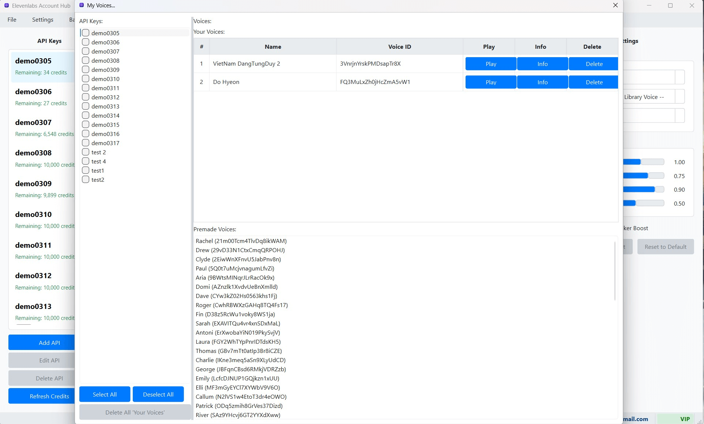

Quản lý Giọng nói của Bạn (My Voices / VoiceLab)
"My Voices" (hay còn gọi là "VoiceLab" trên trang web của ElevenLabs) là nơi bạn quản lý các giọng nói tùy chỉnh (custom voices) hoặc giọng nói đã được bạn nhân bản (cloned voices) và liên kết với tài khoản ElevenLabs của mình. ElevenLabs Account Hub cung cấp một giao diện chuyên dụng để bạn có thể xem, thêm, sửa, xóa và quản lý các mẫu âm thanh cho những giọng nói này trực tiếp từ phần mềm.
1. Mở Cửa sổ "My Voices"
Để truy cập trình quản lý giọng nói tùy chỉnh của bạn:
- Trên Thanh Menu của cửa sổ chính, chọn "Voices Library".
- Từ menu con xổ xuống, chọn "My Voices".
Cửa sổ "Quản lý Giọng nói Của bạn" (Manage Your Voices) sẽ xuất hiện. Đây là trung tâm để bạn tương tác với các giọng nói trong VoiceLab của mình.
 (Hình ảnh: Giao diện tổng quan của cửa sổ "My Voices")2. Các Chức năng Chính trong Cửa sổ "My Voices"
Trong cửa sổ "My Voices", bạn có thể thực hiện các thao tác sau:
a. Chọn Khóa API để Làm việc
Ở phía trên cùng của cửa sổ "My Voices", bạn sẽ thấy một danh sách thả xuống có nhãn "Chọn Khóa API" (Select API Key). Vì các giọng nói trong "My Voices" được liên kết với một tài khoản ElevenLabs cụ thể, bạn cần chọn Khóa API tương ứng với tài khoản mà bạn muốn quản lý giọng nói.
Sau khi bạn chọn một Khóa API từ danh sách này, phần mềm sẽ tự động tải và hiển thị danh sách các giọng nói tùy chỉnh ("My Voices") thuộc về tài khoản của Khóa API đó trong bảng bên dưới.
b. Xem Danh sách Giọng nói
Bảng danh sách ở giữa cửa sổ hiển thị các thông tin chi tiết về từng giọng nói tùy chỉnh của bạn, bao gồm:
- ID Giọng nói (Voice ID): Mã định danh duy nhất của giọng nói trên hệ thống ElevenLabs. Đây là thông tin quan trọng khi bạn muốn sử dụng giọng nói này qua API.
- Tên Giọng nói (Name): Tên bạn đã đặt cho giọng nói khi tạo hoặc chỉnh sửa.
- Mẫu (Samples): Số lượng tệp âm thanh mẫu đã được tải lên và liên kết với giọng nói này. Số lượng và chất lượng của các mẫu âm thanh ảnh hưởng trực tiếp đến chất lượng của giọng nói nhân bản.
- Mô tả (Description): Mô tả ngắn về giọng nói (nếu bạn đã cung cấp khi tạo/sửa).
- Nhãn (Labels): Các nhãn (tags) bạn đã gán cho giọng nói để phân loại (ví dụ: "nam", "nữ", "trẻ", "già", "giọng kể chuyện", "giọng quảng cáo").
- Hành động (Actions): Một cột chứa các nút cho phép bạn thực hiện các thao tác cụ thể với từng giọng nói (ví dụ: Sửa, Xóa, Quản lý Mẫu).
c. Thêm Giọng nói Mới (Add Voice / Instant Voice Cloning)
Tính năng này cho phép bạn tạo một giọng nói nhân bản mới (Instant Voice Cloning) và thêm vào tài khoản ElevenLabs của mình:
- Nhấn nút "Thêm Giọng nói" (Add Voice).
- Một hộp thoại "Thêm Giọng nói Mới" (Add New Voice) sẽ xuất hiện. Tại đây bạn cần:
- Đặt tên (Name): Nhập một tên gợi nhớ cho giọng nói mới.
- Tải lên Tệp Âm thanh Mẫu (Upload Sample Files): Nhấn nút "Chọn Tệp" (Select Files) để chọn một hoặc nhiều tệp âm thanh (ví dụ: .mp3, .wav) từ máy tính của bạn. Các tệp này phải chứa giọng nói rõ ràng, không có tiếng ồn nền, và không có giọng của người khác. ElevenLabs thường khuyến nghị tổng thời lượng âm thanh mẫu ít nhất là 1 phút, và có thể lên đến 5 phút hoặc nhiều hơn để có kết quả tốt nhất. Bạn có thể tải lên tối đa 25 tệp mẫu.
- Mô tả (Description - Tùy chọn): Thêm mô tả ngắn về giọng nói.
- Nhãn (Labels - Tùy chọn): Thêm các nhãn để phân loại giọng nói.
- Sau khi điền thông tin và chọn tệp mẫu, nhấn "Lưu & Tạo Giọng nói" (Save & Create Voice). Phần mềm sẽ tải các tệp mẫu lên máy chủ ElevenLabs và bắt đầu quá trình tạo (nhân bản) giọng nói.
- Quá trình này có thể mất một chút thời gian. Sau khi hoàn tất, giọng nói mới sẽ xuất hiện trong danh sách "My Voices".
d. Sửa Thông tin và Mẫu của Giọng nói (Edit Voice)
- Trong bảng danh sách, chọn giọng nói bạn muốn chỉnh sửa.
- Nhấn nút "Sửa" (Edit) trong cột "Actions" của giọng nói đó (hoặc có thể có một nút "Sửa Giọng nói" riêng biệt sau khi chọn).
- Hộp thoại "Chỉnh sửa Giọng nói" (Edit Voice) sẽ xuất hiện, tương tự như hộp thoại thêm mới. Tại đây bạn có thể:
- Thay đổi Tên, Mô tả, Nhãn của giọng nói.
- Quản lý Tệp Âm thanh Mẫu: Xem danh sách các tệp mẫu hiện có, nghe thử từng mẫu, xóa các mẫu không mong muốn, hoặc tải lên các tệp mẫu mới để cải thiện chất lượng giọng nói.
- Nhấn "Lưu Thay đổi" (Save Changes) để cập nhật.
e. Xóa Giọng nói (Delete Voice)
- Trong bảng danh sách, chọn giọng nói bạn muốn xóa vĩnh viễn khỏi tài khoản ElevenLabs của mình.
- Nhấn nút "Xóa" (Delete) trong cột "Actions" của giọng nói đó.
- Một hộp thoại xác nhận sẽ xuất hiện, yêu cầu bạn xác nhận hành động xóa.
- Nếu bạn chắc chắn, hãy xác nhận. Giọng nói sẽ bị xóa khỏi "My Voices" trên máy chủ ElevenLabs. Hành động này không thể hoàn tác.
f. Nghe Thử Mẫu Âm thanh (Play Sample)
Đối với mỗi giọng nói trong danh sách, bạn có thể có tùy chọn để nghe thử một hoặc nhiều tệp âm thanh mẫu đã được tải lên cho giọng nói đó. Thường sẽ có một biểu tượng phát  bên cạnh thông tin về mẫu hoặc trong hộp thoại chỉnh sửa giọng nói.
bên cạnh thông tin về mẫu hoặc trong hộp thoại chỉnh sửa giọng nói.
g. Làm mới Danh sách Giọng nói (Refresh List)
Nhấn nút "Làm mới" (Refresh) (thường là biểu tượng mũi tên xoay tròn) trên cửa sổ "My Voices" để tải lại danh sách giọng nói từ tài khoản ElevenLabs của Khóa API đang được chọn. Điều này đảm bảo bạn luôn thấy thông tin mới nhất, đặc biệt nếu bạn vừa thực hiện thay đổi trên trang web của ElevenLabs.
Lưu ý Quan trọng khi Quản lý "My Voices"
- Ảnh hưởng Trực tiếp đến Tài khoản ElevenLabs: Mọi thao tác bạn thực hiện trong cửa sổ "My Voices" của ElevenLabs Account Hub (như thêm, sửa, xóa giọng nói, quản lý mẫu) sẽ trực tiếp ảnh hưởng đến danh sách giọng nói và các mẫu âm thanh trên tài khoản ElevenLabs của bạn trên máy chủ của họ.
- Chất lượng Giọng nói Nhân bản: Chất lượng của một giọng nói nhân bản (Instant Voice Cloning) phụ thuộc rất nhiều vào chất lượng, độ dài, và sự đa dạng của các tệp âm thanh mẫu bạn cung cấp. Hãy đảm bảo các mẫu âm thanh rõ ràng, không có tiếng ồn nền, và chỉ chứa giọng nói của người bạn muốn nhân bản.
- Tuân thủ Điều khoản Dịch vụ: Luôn tuân thủ các điều khoản dịch vụ của ElevenLabs khi tạo và sử dụng giọng nói tùy chỉnh. Đặc biệt lưu ý về vấn đề bản quyền và sự cho phép nếu bạn đang nhân bản giọng nói của một người khác. Bạn phải có quyền hợp pháp để sử dụng các mẫu âm thanh đó.
- Giới hạn của Gói Tài khoản: Hãy nhớ rằng số lượng giọng nói tùy chỉnh bạn có thể tạo và lưu trữ trong "My Voices" bị giới hạn bởi gói tài khoản ElevenLabs của bạn (ví dụ: tài khoản miễn phí, Creator, Pro, v.v.).